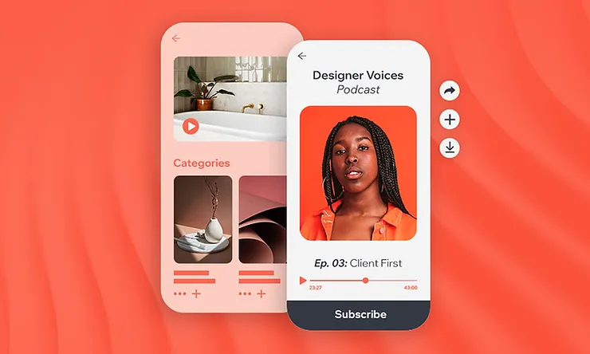
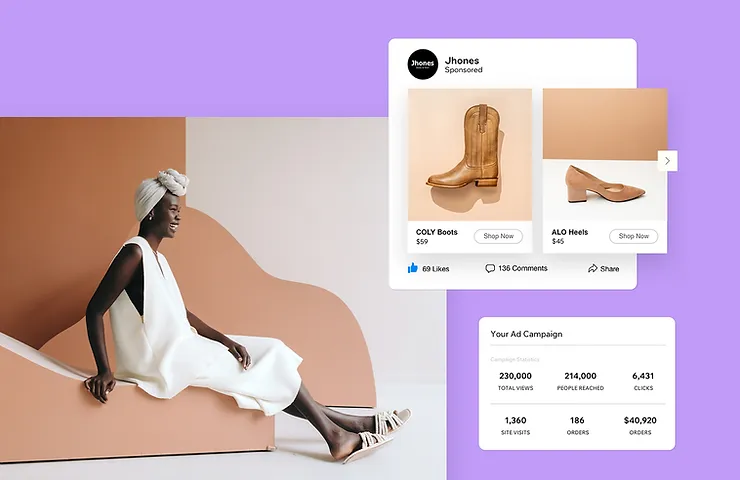

This is Page 2
This page contains an image, video, and audio.
How to make money from a website
1. Build email lists
Email marketing remains one of the most cost-efficient forms of online marketing,
and can help you make money from your site in many ways.
With a strong email list you can directly engage customers and boost sales.
Further, you can use email to send coupons, affiliate links and sponsored content.
Setting up email automations, such as abandoned cart and back-in-stock notifications can also help you generate revenue by saving sales that might otherwise have been lost. Once you have a robust email list, third party companies may pay you for access to the list. So—start early.
You can collect emails through newsletter sign-ups, membership forms, your blog and via link through any kind of messaging you send to your site visitors.
2. Launch a podcast
Tapping into the growing popularity of audio content can be an effective way to make money from your site.
By creating engaging and informative episodes you can attract a dedicated audience.
As your podcast gains traction, you can use it as a vehicle for various monetization strategies, such as sponsorships, affiliate marketing or as a part of premium content for subscribers.
By consistently delivering high-quality content and building a loyal audience, your podcast can become a significant driver of traffic and revenue for your website.

3. Start a blog
Starting a blog can be a powerful way to make money from your website.
By creating consistent, high-quality content that resonates with your target audience you can attract a following of readers who trust your opinions and recommendations.
This trust is the foundation of successful blog monetization, as it allows you to promote products, services or affiliate offers that genuinely benefit your audience.
A successful blog also opens the door to opportunities for sponsored content and partnerships.
4. Dropshipping
Dropshipping can help you make money for your website by enabling you to sell products without the need for inventory.
By partnering with a dropshipping supplier, you can sell products directly to your audience, while the supplier handles the storage, packaging and shipping of the items.
When a customer makes a purchase through your website, you simply forward the order details to your supplier, who then ships the product directly to the customer.
You earn a profit on the difference between the retail price you set and the wholesale price charged by the supplier. Dropshipping allows you to offer a wide range of products to your audience without the risk and overhead of traditional inventory management, making it an attractive option if you’re looking to get started with e-commerce or expand how you make money with your website.
